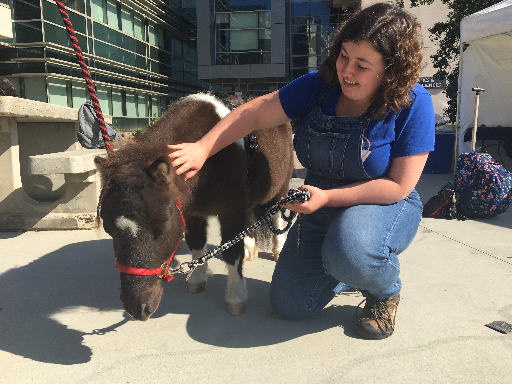

About Me
I was born into a U.S. Military family in 2000. Thanks to that, I have lived all over the world and gotten to experience many cultures throughout my childhood. I especially have great fondness for Chinese cultural events, such as the Mid-Autumn Lantern Festival.
I am currently taking a Full Stack Web Development course with UCSD Extension in hopes to enter the programming field. Being on the Spectrum, I’ve found that coding plays very well to my strengths, such as learning rules and remembering random tidbits of information.
I want to create websites that are fun, but also easily accessible to people with varieties of disabilities. Maybe one day, if I ever get good enough at pixel art, I’ll make a webcomic that everyone can read (filled with coding jokes of course).